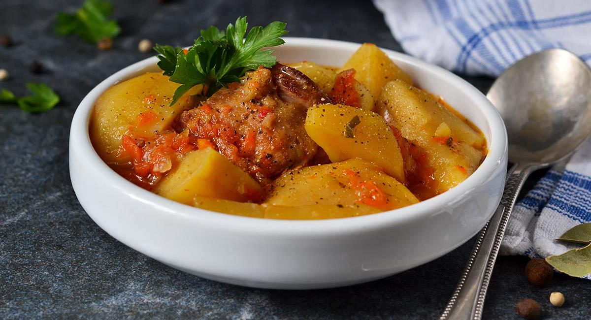

Receta de Ají de Papalisa
El ají de papalisa es un plato tradicional de las zonas andinas de Bolivia. Se prepara con papalisa (olluco),
carne, ají colorado y especias, resultando en un guiso sabroso y muy nutritivo.
Tiempo de preparación
| Total |
Preparación |
Cocción |
| 1 hora |
20 minutos |
40 minutos |
Ingredientes
- 1/2 kg de papalisa (olluco), lavada y cortada en rodajas
- 250 g de carne de res o cordero, en trozos pequeños
- 1 cebolla mediana, picada finamente
- 2 cucharadas de ají colorado molido
- 2 dientes de ajo picados
- 1 tomate maduro, picado
- 1 taza de caldo de res
- 1 pizca de comino y orégano
- 1 chorrito de aceite
- Sal y pimienta al gusto
- Perejil picado para decorar
Instrucciones
- Preparar el sofrito: En una olla, calentar el aceite y sofreír la cebolla, el ajo y el
tomate hasta que estén bien dorados.
- Agregar la carne: Incorporar la carne y sellarla hasta que tome color. Añadir el ají
colorado y condimentar con comino, orégano, sal y pimienta.
- Incorporar la papalisa: Agregar las rodajas de papalisa y mezclar bien con el sofrito.
- Cocinar con caldo: Verter el caldo y dejar hervir a fuego medio hasta que la papalisa esté
tierna y el guiso espese (aprox. 30-40 minutos).
- Servir: Decorar con perejil picado y acompañar con arroz o pan casero.
Información nutricional (aprox. por porción)
| Calorías |
Carbohidratos |
Proteínas |
Grasas |
| 280 kcal |
30 g |
15 g |
10 g |